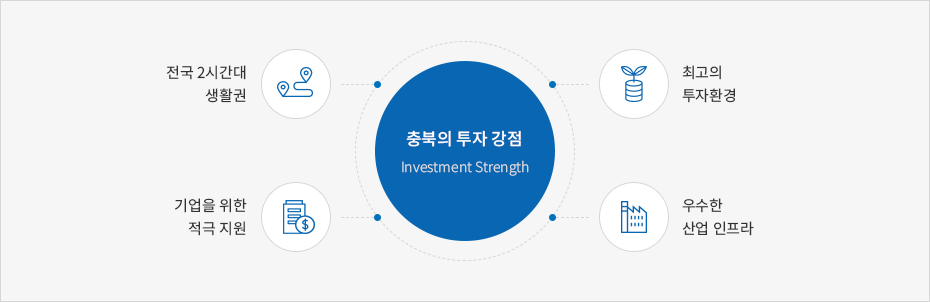

충북 투자강점
- Home
- 투자 강점
- 충북 투자강점



수도권 1시간, 전국 2시간대 생활권 최고의 투자환경
사통팔달의 고속도로망 구축
- 남,북 4개노선 ▶ 경부, 중부, 중부내륙, 중앙고속도로
- 동,서 3개노선 ▶ 평택~제천, 당진~영덕, 당진~울진 고속도로
X자형 고속철도망 구축
- 오송역 : 국내 유일의 경부고속철도·호남고속철도 분기역 충북선,중앙선,태백선 연계를 통한 전국X축 연결
- 중부내륙선(이천~충주~문경), 천안~청주(국제공항) 복선전철 건설 중
- 중앙선(원주~제천) 복선전철 건설 중
중부권 거점공항인 청주국제공항
- 수송능력 : 여객 315만명, 화물38천톤, 항공기 14만회
- 운항노선 : 베이징, 상하이 등 39개 노선
※ 지방공항 전국 최초 화물기 취항(2011.9.23.) - 오송역 ~ 청주국제공항 10분대 거리(21km)
- 오송생명과학단지, KTX 역세권 도시, 세종시 등을 포함하는 글로벌시티 조성에 따른 대도심권 형성으로 해외운항 수요 급증
- 인천국제공항 접근성 양호(90분 거리)
완비된 우수 산업기반 인프라
충북경제자유구역 지정(‘13.2.4)
- 바이오밸리(청원오송) 4.41㎢, 에어로폴리스(청주공항 주변) 0.47㎢, 에코폴리스(충주) 4.20㎢
양질의 우수 인력 공급
- 인재개발 : 충북인재양성재단 설립(1,000억원 조성)
- 고급인력 : 31개 대학(원) 71천명)
- 기능인력 : 25개 전문계고 17천명)
- 기업수요 맞춤형 인력양성)
- 지역별 산·학·연·관 네트워크 활성화
충주댐, 대청댐의 풍부한 공업용수 및 전력
- 풍부한 공업용수 공급(5,029백만㎥)
- 안정적인 산업전력 공급 (10억 94백만Kwh)
IT,BT 등 첨단산업 R&D 인프라
- 오송첨단의료복합단지 조성 및 보건의료관련 6대 국책기관 이전
- 오송·오창을 중심으로한 첨단산업 클러스터 구축 (한국생명공학연구원오창캠퍼스, 충북테크노파크, 한국기초화학지원연구원오창캠퍼스 등)
전국 최고의 기업하기 좋은 투자 환경
기업인이 예우받는 사회 분위기 조성
도지사와 기업인 간담회 개최, 기업인의 날, 기업인 여권 우선발급제 등 운영기업애로지원센터 운영
- 법률, 회계, 세무 등 전문가 상담의 날 운영 : 월1회
- 기업애로 옴브즈만(12명) 제도 운영
- 기업애로사항 상담 및 원스톱 서비스 해결
- 기업애로 권역별 순회 상담회 실시 등